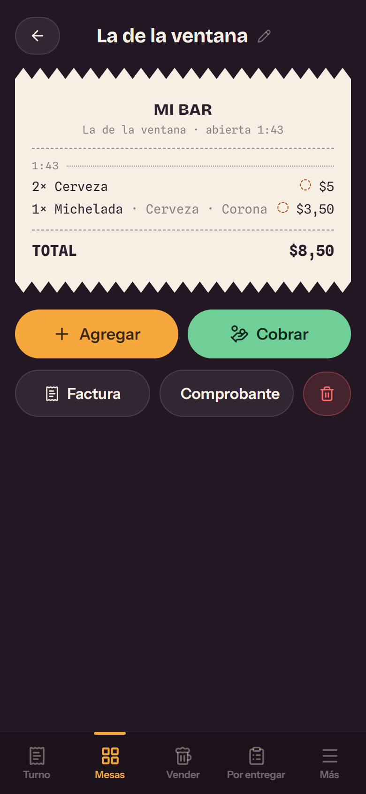
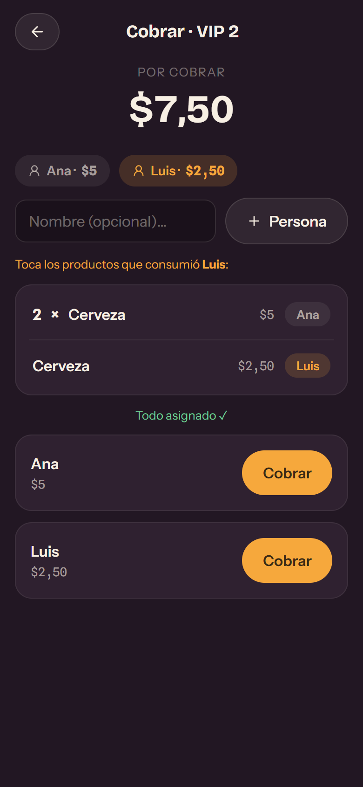
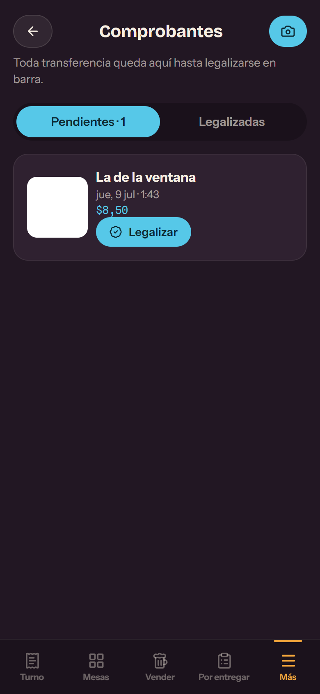
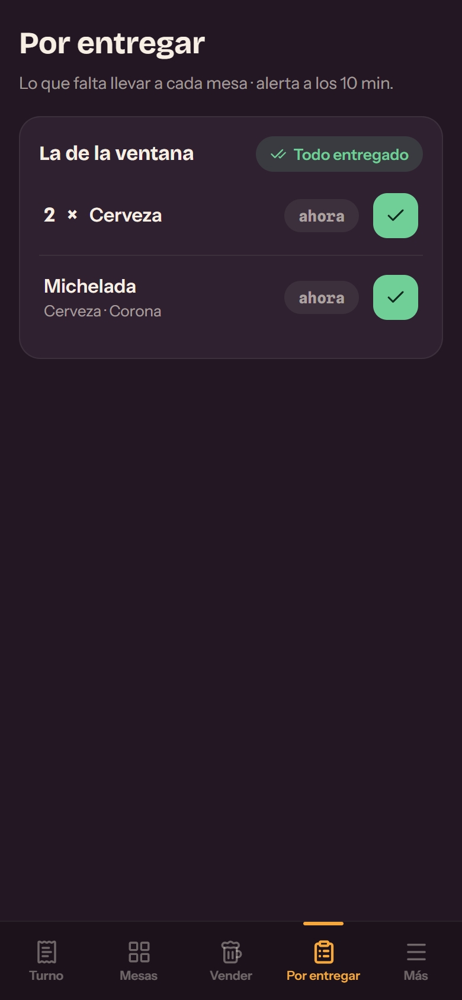
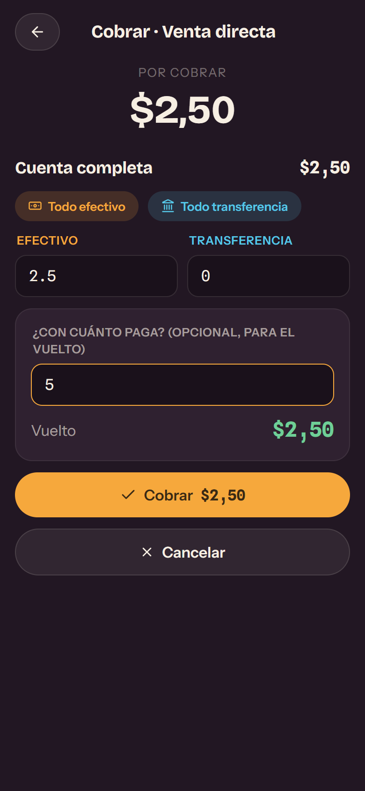
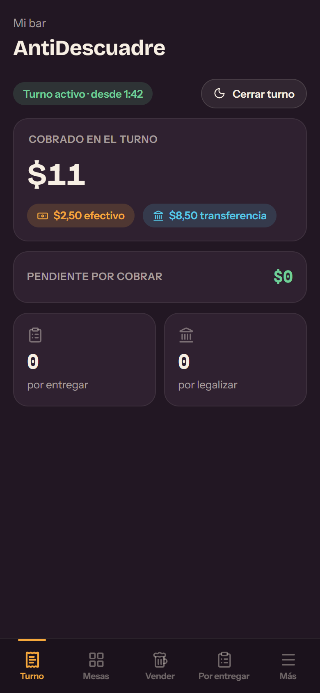

— para bares y restaurantes —
La caja cuadra.
Siempre.
Turnos, mesas, cuentas divididas, comprobantes de transferencia y pedidos por entregar — todo en tu teléfono, sin internet y sin cuentas. Al final de la noche, los números cierran solos.
gratis · offline · tus datos nunca salen de tu dispositivo
“¿Quién no pagó la mesa 4?” “¿Y el comprobante de esa transferencia?” “Faltan $12 en caja…” descuadre: 0,00
Una noche de viernes,
bajo control
Cada pantalla existe porque algo se descuadraba sin ella.

Cada mesa, su comanda
Abres la cuenta, agregas productos con dos toques y la ve como un ticket real: qué pidieron, a qué hora, qué falta por entregar. Las mesas se llaman como tú quieras: «La de la ventana», «VIP 2».

“Yo solo tomé dos”
Divide la cuenta en partes iguales, con montos a mano, o por consumo real: asignas los productos a cada persona y cada quien paga lo suyo — incluso mitad en efectivo y mitad por transferencia.

Ningún comprobante se pierde
Toda transferencia exige foto del comprobante y nace «pendiente de legalizar». Una cinta imposible de ignorar te lo recuerda hasta que la verificas en barra. Ahí muere el clásico “yo sí transferí”.

Nada se enfría en la barra
Todo lo pedido queda «por entregar» con su cronómetro. Si algo lleva demasiado tiempo sin salir, se enciende en rojo. Tú decides cuántos minutos son demasiados.

El vuelto, sin mentalidad
Escribes con cuánto te pagan y el vuelto aparece al instante. Viernes, 2 a.m., música a todo volumen: cero matemáticas mentales, cero errores.

El turno cierra cuando cuadra
Todo el día vive dentro de un turno. Y no puedes cerrarlo si una mesa debe dinero — la app te dice cuál y cuánto. Cuando cierra, cierra de verdad: efectivo, transferencias y total, separados.
aquí el color habla:
La comanda de instalación
AntiDescuadre no está en ninguna tienda ni la necesita: se instala desde el navegador en menos de un minuto. Marca cada paso como si fuera un pedido.
saldada
¿Por qué no está en Play Store? Porque no hace falta: es una app web instalable (PWA). Ocupa casi nada, se abre a pantalla completa como cualquier app, funciona sin internet y tus datos se guardan únicamente en tu dispositivo.
Lo que siempre preguntan
¿Necesito internet para usarla?
Solo la primera vez, para abrirla e instalarla. Después funciona 100% sin conexión: ventas, cobros, fotos de comprobantes, todo.
¿Dónde se guardan mis datos?
En tu propio dispositivo. No hay cuentas, no hay nube, nadie más los ve. Por lo mismo: si borras la app o los datos del navegador, se pierden — es tuya de verdad.
Tengo dos locales, ¿configuro todo dos veces?
No. En Ajustes exportas tu configuración (catálogo, precios, variantes, mesas) como archivo y la importas en el otro dispositivo. Las ventas y turnos de cada local se quedan en su propio equipo.
¿Cuánto cuesta?
Nada. Es un proyecto abierto: el código está publicado en GitHub y la app se sirve desde esta misma página.
¿Sirve para mi menú con variantes raras?
El catálogo lo armas tú desde cero: categorías dentro de categorías, y productos con opciones anidadas (una michelada con base cerveza o soda, y dentro de cada base sus marcas, cada una con su precio extra si aplica).